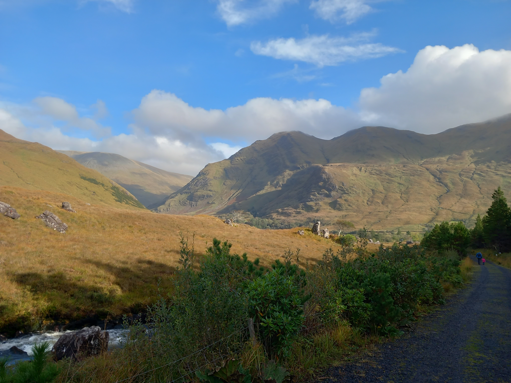
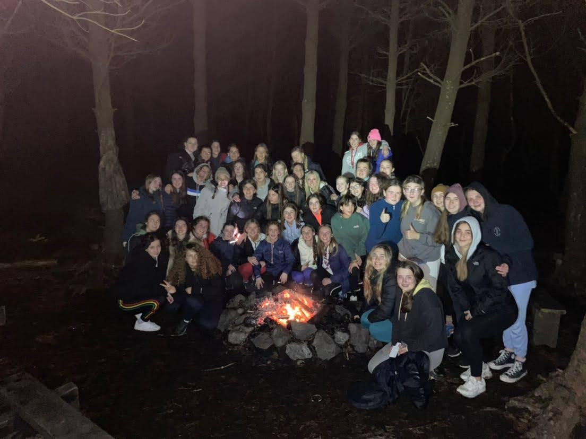

Delphi Trip
Also Leuts, ich hänge zurück mit meinem Blog...das muss aufgeholt werden!!
Deswegen kommt jetzt mein Blogeintrag zum Delphi Trip.
Mitte Oktober, also jetzt so ziemlich ein Monat her (Junge, ich muss aufholen), ging es für mich und die anderen aus meinem Jahrgang nach Delphi.
Und da ihr keine Ahnung habt, was das ist, erkläre ich das jetzt mal :D
Aaaalso: (Spannung steigt) Delphi ist ein Outdoor Adventure Resort für Schüler im Land...
Es liegt Westlich von Galway, also eigentlich ganz im Westen vom Land :P
Komplett andere Natur als hier und ganz wichtig...mehr Schaafe als hier im Süd-Osten


Dort angekommen hieß es, sich sofort fertig zu machen...
Das erste was wir gemacht hatten war Kanu fahren...es war zwar minimal kalt, aber das war noch auszuhalten
Nach einer Wasserschlacht und ins Wasser springen ging es dann bisschen getrocknet zurück
Der Abend wurde dann mit einer Nachtwanderung ausgeklungen
Am zweiten Tag ging es dann zum Klettern. Ähnlich wie in einem Kletterpark nur ein bisschen kleiner verbrachten wir unseren Tag

Die Nacht verbrachten wir dann mitten im Wald am Lagerfeuer mit ganz vielen Lagerfeuerliedern

Am nächsten Morgen hieß es dann noch ein letztes Mal klettern und dann ging es für uns auch schon in den Bus nach Hause
Es waren zwar doch sehr anstrengende Tage, aber es hat sich auf jeden Fall gelohnt und ich habe meine Klasse viel besser kennen gelernt <3